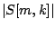
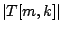

A second application of Fourier analysis and resynthesis is a time-varying filter capable of making one sound take on the evolving spectral envelope of another. This is widely known in electronic music circles as a vocoder, named, not quite accurately, after the original Bell Laboratories vocal analysis/synthesis device. The technique described here is more accurately called timbre stamping. Two input signals are used, one to be filtered, and the other to control the filter via its time-varying spectral envelope. The windowed Fourier transform is used both on the control signal input to estimate its spectral envelope, and on the filter input in order to apply the filter.
A block diagram for timbre stamping is shown in Figure 9.9.
As in the previous example, the timbre stamp acts by multiplying the
complex-valued windowed Fourier transform of the filter input by non-negative
real numbers, hence changing their magnitudes but leaving their phases intact.
Here the twist is that we want simply to replace the magnitudes of the
original, , with magnitudes obtained from the control input (call
them , say). The necessary gain would thus be,